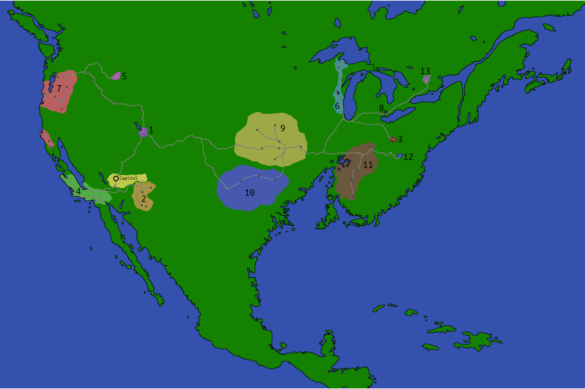

I've always been captivated by the world of the Hunger Games -- a semi-futuristic empire rising from the ashes of a post-apocalyptic North America? Yes!
However, Panem has many structural contradictions that need reconciling: there's a single district with a population of 12,000? Clearly some districts must pull more weight than others. But, even so, Panem can't be more than 10-15 million people -- and it's supposed to sprawl across the whole continent, even in a post-apocalyptic context this is far below the land's carrying capacity. And these districts are pretty hyper-specialized.
The districts therefore can't be properly contiguous: consider District 12, a small town with a mine, a rail connection, and a vast wilderness.
Most maps of Panem, even official ones, make zero sense logistically (these districts cannot possibly sprawl that much), even if they communicate the gist of what Panem means symbolically. Many don't handle the sea level rise or geography accurately. Maybe viewing Panem in grounded logistical terms is missing the point (hovercraft and 19th-century style coal mining?), but I want to reconcile it to something vaguely plausible, and this map was my attempt.
The base map is something I made a long time ago in elementary school, and it's not that good. But I don't remember my source for the sea-level rise, and it's at least pretty accurate, so I decided to just use it.
Most maps locate the Capitol in Colorado, but to me Las Vegas seems a better location. Denver abuts the rocky mountains on one side but is not protected on all sides, and lacks for local sources of electricity. As depicted in the books, the Capitol outsources too many crucial things to the districts: so, in my headcanon, the Colorado river and its surviving dams are managed by the Capitol and supply all the electricity and water of the Capitol. Without agricultural use or other cities to drain it, the Colorado river supplies electricity and water aplenty.
The books make clear that rail is the backbone of Panem, and, though they imply high speed rail connects the districts, maintaining even a transcontinental low-speed network would be quite a feat for a city of like no more than a million people. The Capitol probably cannot afford to construct a high speed rail line from Las Vegas to West Virginia, and has no reason to. So, the rail lines depicted are all lines that currently exist, which survived the apocalypse.
A quick recap of the districts w/my spin:
- District 1, a city built atop the ruins of Salt Lake City, serves as a final assembly point for goods inbound to the Capitol, existing at the primary rail chokepoint between the Capitol and most of the districts. It mostly manufactures consumer-facing goods. (pop. ~550,000)
- District 2, a set of connected settlements and mining towns in Arizona, supplies copper, lithium, stone, and other Earth materials, as well as much of the Capitol's army. (pop. ~650,000)
- District 3, a city built around the only surviving semiconductor manufacturing plant in Ohio, produces the Capitol's semiconductors and other high-tech goods; District 1 typically does final assembly on these, especially consumer-facing electronics. Most software development is centralized in the Capitol and not outsourced. (pop. ~500,000)
- District 4, a sprawling district, is a connection of ocean-facing fishing villages and settlements in the formerly high ground of southern and central California. They harvest fish and other seafood. (pop. ~90,000)
- District 5 does not supply the Capitol's electricity, but instead manufactures electrical gear, manages secondary dams in Idaho which supply the districts, and is used as labor to electrify rail and to build and maintain the high voltage lines connecting the districts. (pop. ~140,000)
- District 6, a strip of connected towns, comprises the iron mines of the iron-rich upper peninsula with industrial centers built on the ruins of midwestern manufacturing towns. The district serves as a source of iron and steel, and a manufacturing hub for rolling stock, rails, beams, concrete, and all manner of industrial goods. (pop. ~1,350,000)
- District 7, a sprawling set of villages and milltowns in the great forests of the Pacific Northwest and Northern California, supplies the bulk of timber for the Capitol and, secondarily, furs. It is split into two enclaves. The largest and most populous is connected to the rail mainline of the capitol, supplying the bulk of the timber. (pop. ~150,000) The other is a small cluster of isolated settlements on the Eel river, existing only to supply redwood. (pop. ~30,000)
- District 8, a city built atop the ruins of Detroit, is supplied with raw oil, cotton, fur, and silk, and manufactures (mostly by hand) all manner of clothes and textiles. (pop. ~750,000)
- District 9, located in the great plains, consists of a spread of chattle plantations dedicated mostly to the cultivation of wheat. Corn and rice are not staple crops in Panem, perhaps they were devastated by monocrop-related diseases during the apocalypse. The district secondarily produces raw oil, used mostly in textiles and building construction. (pop. ~800,000)
- District 10, in northern Texas, comprises a string of factory farms, canneries, tanneries, and meatpacking plants. It supplies animal products: various raw and proccessed foodstuffs, milk, and leather. The canneries also can vegetables and fruits from other districts. (pop. ~750,000)
- District 11, a large spread of chattle plantations, located in those parts of the American south not underwater, grows most of Panem's cash crops, from cotton to almonds. (pop. ~1,600,000)
- District 12, a lonely coal mining town nestled in the hills of West Virginia around a centuries-old mine, produces coal used as a backup power source. (pop. ~20,000)
- District 13, annihilated, was built around a Canadian uranium mine and contained facilities for uranium enrichment and an arsenal of nuclear weapons. (pop. ~65,000)
Yeah ok it still doesn't make that much sense, but it's my best attempt at filling in the gaps :P